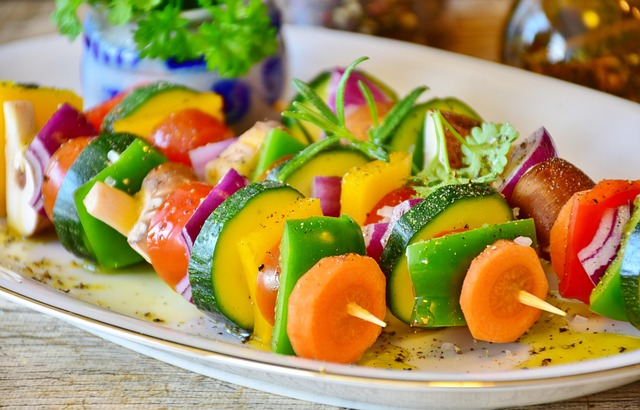

Back
Roasted Spring Vegetables

Description
This roasted spring vegetables side dish is a happy dish. Colorful spring vegetables of yellow, green, and orange are competing for your attention.
They are all happily mingle together in a very easy recipe, with simple ingredients of butter, garlic, seasoned with salt and black pepper.
Ingredients
- Asparagus
- Baby Carrots
- Yellow Squash
- Zucchini
- Salted Butter
- Garlic
- Parsley
- Salt
Steps
- Preheat oven to 400°F (200°C).
- Combine the asparagus, carrots, squash, and zucchini. Add the melted butter, garlic, parsley, and salt, and stir to mix well.
- Ensure that all the spring vegetables are evenly coated with the butter mixture. Arrange them in a single layer on a baking sheet lined with parchment paper.
- Roast for 12 minutes, then dish out and serve immediately.